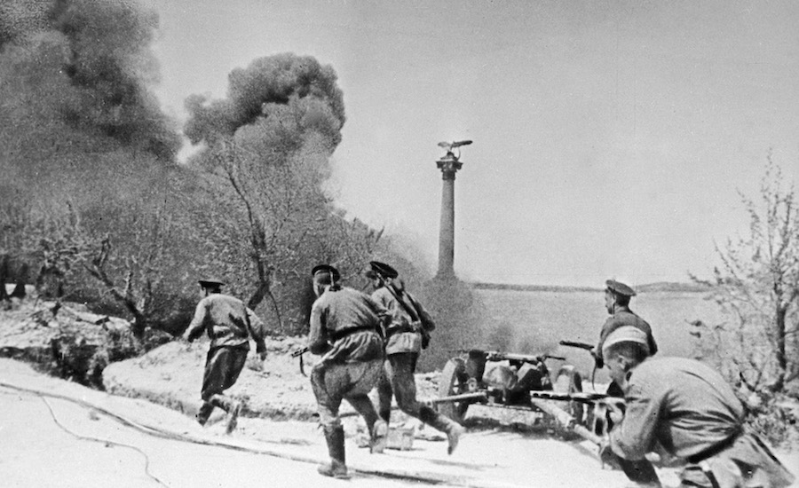
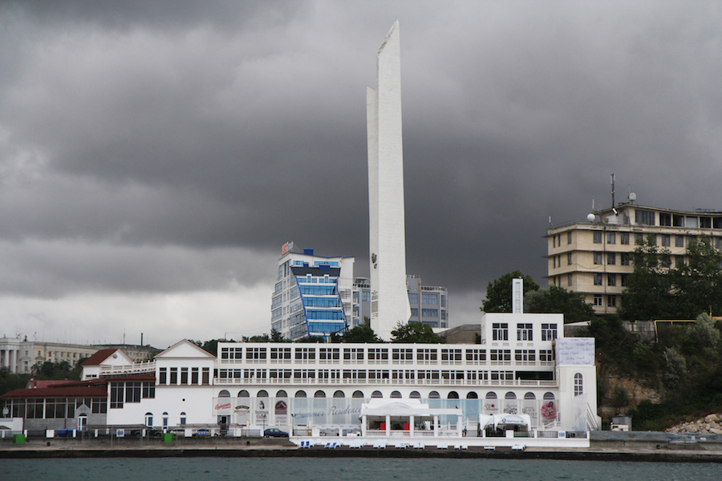

Севастопаль — горад герой!
Да пачатку Вялікай Айчыннай вайны горад Севастопаль быў найбуйнейшым савецкім портам на Чорным моры і галоўнай
ваенна-марской базай краіны.

Да канца вясны 1942 году немцы сцягнулі да Севастопаля групоўку колькасцю 200 тыс. Салдат, 600 самалётаў, 450 танкаў і
больш чым 2 тыс. Гармат і мінамётаў. Ім удалося блакаваць горад з паветра і павялічыць сваю актыўнасць на моры. У выніку
разлютаваных штурму, цаной велізарных страт гітлераўцам удалося захапіць горад. У ходзе жорсткіх баёў героі Севастопаля
нанеслі сур'ёзны ўрон сілам нямецка-фашысцкіх войскаў і парушылі іх планы на паўднёвым крыле фронту.
3 ШТУРМА
Севастопаля рабілі фашысты
580 ТОН
снарадаў у суткі выдаткоўваў абаронцы горада

У 1967 года ў Севастопалі на цэнтральнай плошчы імя Нахімава быў узведзены мемарыял, прысвечаны доблеснай абароне горада
ў гады Вялікай Айчыннай вайны. На бетоннай сцяне помніка намаляваны воін, які адлюстроўвае два штыка. Штыкі сімвалізуюць
два беспаспяховых для гітлераўцаў штурму ў лістападзе-снежні 1941 года. У цэнтры мемарыяла знаходзяцца дошкі з граніту,
на якіх выгравіраваны назвы баявых частак і злучэнняў Чарнаморскага флоту, Прыморскай арміі і севастопальскіх
прадпрыемстваў, якія працавалі на патрэбы фронту.